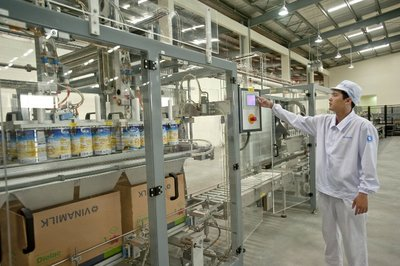
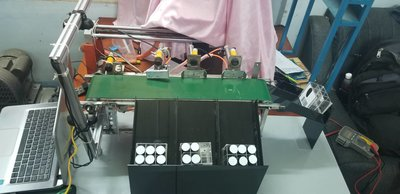

TRƯỜNG ĐẠI HỌC SƯ PHẠM KỸ THUẬT TP. HCM
ĐỒ ÁN TỐT NGHIỆP
KIỂM TRA SẢN PHẨM ỨNG DỤNG XỬ LÝ ẢNH TRONG LABVIEW
GVHD: VŨ VĂN PHONG - SVTH: NGUYỄN VĂN MINH 15142073, THIỀU QUANG NGHĨA 15142079
Lý do chọn đề tài
Trong nước:
- Việc nhận dạng và phân loại sản phẩm bằng xử lý ảnh ở nước ta đang ngày càng phổ biến, được ứng dụng nhiều trong công nghiệp như: nhận dạng và phân loại chất lượng gạch men, đếm số lượng linh kiện điện tử, phát hiện lỗi trên bo mạch,…Trong đời sống như đếm số lượng cá giống, nhận dạng biển số xe,…
- Trên thế giới từ nông nghiệp đến công nghiệp, những công việc từ đơn giản đến phức tạp hầu hết đều đã ứng dụng tự động hóa.
- Trong lĩnh vực nhận dạng và phân loại cũng đã có nhiều những thiết bị chuyên dùng như đầu đọc mã vạch, các hệ thống chuyên dùng sử dụng Camera có độ phân giải cao để nhận dạng.
- Các lĩnh vực ứng dụng: hệ thống phân loại thư từ, phân loại hành lý theo mã vạch trong sân bay, phân loại và quản lý chất lượng sản phẩm trong sản xuất công nghiệp
Chi tiết đồ án
Trong hệ thống có 3 xi lanh để phân loại sản phẩm lỗi theo thứ tự ưu tiên: Lỗi sản phẩm, lỗi Barcode và lỗi Logo.
- Nhấn nút START động cơ kéo tải hoạt động.
- Sản phẩm được băng tải đưa tới Camera thu hình, tại đây Camera thứ nhất đọc số lượng sản phẩm có trong hộp, Camera thứ hai đọc mã Barcode và hình ảnhLogo. Tín hiệu hình ảnh được truyền về máy tính thông qua phần mềm Labview.
- Hệ thống phân loại: Tín hiệu sau xử lý ở Labview được truyền về PLC. Khi sản phẩm đi qua vị trí cảm biến, cảm biến đưa tín hiệu về PLC, PLC xuất tín hiệu điều khiển xylanh đẩy sản phẩm vào rãnh trượt.
- Nhấn nút STOP, hệ thống sẽ dừng lại.
- Khi có sự cố thì nút Emergency Stop hoạt động để dừng hệ thống.

